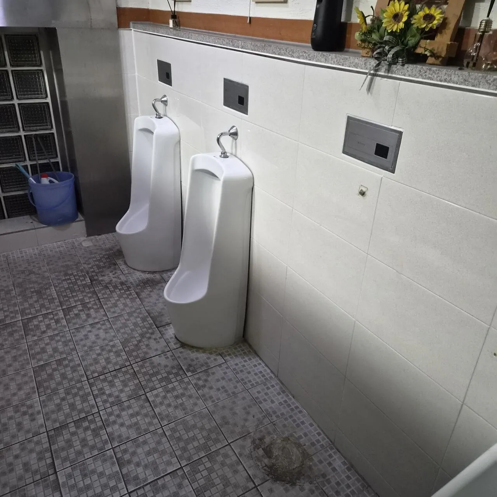

공중 화장실 여자 대변기 칸은 남자 화장실 소변기+대변기 합 이상으로 만들어야함
근데 여자 화장실 대변기 칸은 한정적이고 남자 화장실 소변기+대변기가 여자 화장실 대변기보다 많으면
남자 화장실 소변기 제거해서 법 조항 맞춰야 함
남자 화장실 소변기 3개 + 대변기 3칸 = 6칸 인데 여자 화장실 대변기 5칸이야?
어? 법을 어겼네? 남자 화장실 소변기 1개 치워
그러면 5:5 남녀평등!!!!!
근데 치울꺼면 가운데꺼 치우지 왜 오른쪽 끝을 치워서 서로 오줌 줄기 보면서 싸게 만들었냐...
내가 못하면 니들도 하지마!!!